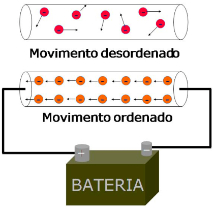
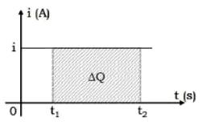
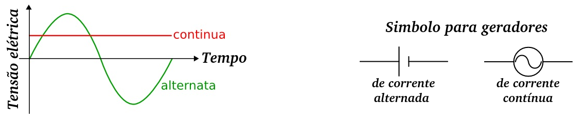
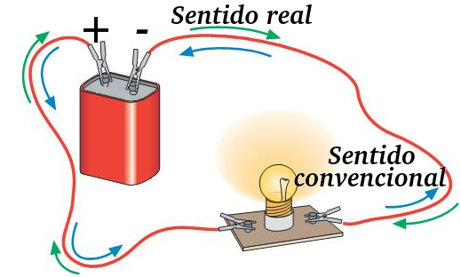
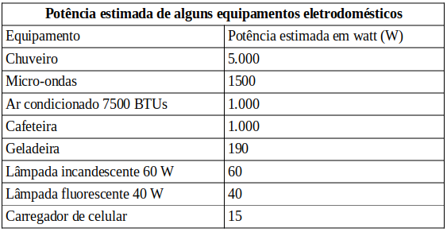

Aula10-77: Introdução à eletrodinâmica
Corrente elétrica
|
Corrente elétrica é fluxo ordenado de elétrons. Os materiais que permitem o fluxo, não impondo resistência ao transito de elétrons, são chamados materiais condutores; os materiais que impõe resistência são chamados isolantes. Os materiais condutores geralmente são aqueles que possuem elétrons livres, isto é, elétrons fracamente aprisionados pelos núcleos. Como estes elétrons estão praticamente livres, eles ficam constantemente se movendo no interior do condutor, passando de núcleo em núcleo; quando são estabelecidas condições favoráveis, estes elétrons se movem todos em praticamente uma única direção e, então, temos o que chamamos fluxo ordenado de elétrons ou corrente elétrica. |
 |
A corrente elétrica é uma grandeza física e, portanto, pode ser mensurada através da seguinte expressão:
Em que:
◦ é a corrente elétrica;
◦ é a carga que a atravessa o condutor;
◦ é o tempo necessário para que a carga em questão o atravesse.
A unidade de medida para corrente elétrica, de acordo com o SI, é:
➔ AGENTES TRANSPORTADORES DE CARGAS:
A corrente elétrica pode ocorrer em qualquer um dos estados físicos da matéria; estado sólido, líquido ou gasoso. A depender do estado físico do material em que ela ocorre, os agentes transportados de carga variam:
-
Sólidos
◦ Elétrons
-
Líquidos
◦ Íons
-
Gases
◦ Cátions e elétrons
➔ GRÁFICO CORRENTE ELÉTRICA X TEMPO
|
 |
A área é numericamente igual a carga: |
Tensão elétrica ou DDP
Tensão elétrica é a condição física que possibilita a existência de corrente elétrica num condutor. Ela é a diferença de potencial elétrico entre dois pontos (daí também ser chamada de DDP). Sempre que dois pontos de um condutor elétrico encontram-se sob diferentes potenciais, há então corrente elétrica.
Podemos calcular a tensão através da expressão:
Em que:
◦ é a tensão;
◦ é o trabalho realizado pela força elétrica sobre um elemento de carga;
◦ é a carga que sofre o trabalho.
A unidade para tensão elétrica, no Si, é:
Podemos gerar tensão elétrica numa região qualquer de dois modos distintos: estabelecendo uma diferença de potencial de valor constante entre estes dos pontos ou então fazer esta diferença variar constantemente.
➔ CORRENTE CONTÍNUA E ALTERNADA E SUA RELAÇÃO COM A TENSÃO
Quando conectamos um fio condutor a uma pilha, por exemplo, os elétrons fluirão do polo em que há um excedente de elétrons para o polo em que há uma escassez deles. Se a quantidade excedente existir sempre no mesmo polo e a quantidade faltante também, então a tensão não oscilará, tampouco a corrente. Chamamos este tipo de corrente de corrente continua.
Agora, quando conectamos, por exemplo, um fio condutor a uma tomada predial, os elétrons fluirão para uma direção e, logo em seguida, para a direção oposta; esta variação de direção, pelo menos no Brasil, ocorre cerca de 60 vezes a cada segundo (60 Hz). Neste caso, os elétrons excedentes estão ora num polo, ora no outro; esta oscilação de polos na tensão gera uma alternância de direção de corrente elétrica. A este tipo de corrente damos o nome de corrente alternada.

➔ SENTIDO REAL E CONVENCIONAL DA CORRENTE ELÉTRICA
Antigamente se acreditava que a eletricidade fosse um fluido, que corria do lugar de maior concentração (+) para o de menor concentração (-) dela; pensava-se então que a corrente elétrica corria do positivo ao negativo. No entanto, estudos posteriores deram conta de que, na verdade, o que fluía eram cargas negativas, que são representadas pelo simbolo de negativo. Do desenvolvimento histórico da ciência elétrica decorreu esta tremenda confusão: mas afinal, a eletricidade flui do positivo ao negativo ou do negativo ao positivo? Hoje, adotamos a seguinte convenção: Quando desenhamos um gerador de tensão, representamos com o sinal de menos a região em que há elétrons em bonança, mais elétrons, mais cargas negativas, o que resulta num sinal negativo; e representamos com o sinas de mais a região em que há elétrons em carência, com menos elétrons na região decorre as cargas positivas tendem a preponderar, mais cargas positivas resultam numa sinal positivo. Sabemos que na realidade as cargas se diregem, portanto, do negativo ao positivo; no entanto, convencionalmente dizemos que eles se projetam no positivo ao negativo.
|
 |
Obs.: Para fins de cálculo, não importa o sentido adotado, se o convencional ou se o real. |
Potência elétrica
É a grandeza física que indica a quantidade de energia elétrica cedida ou retirada de/para algo, como, por exemplo, um dispositivo elétrico qualquer, por unidade de tempo:
Podemos, também, manipular esta equação algebricamente para fim de se chegar a outra:
A unidade para potência elétrica, no SI, é:

Energia elétrica
Embora o S.I reconheça o J (joule) como sendo a unidade de medida para energia; usamos amíude o kW.h (kilowatt-hora). Fazemos isso porque corriqueiramente lidamos com quantidades de energia que se expressos em termos de joules, resultariam em valores muito elevados e pouco práticos. Para melhor concebermos a magnitude de um kW.h, podemos pensar no seguinte exemplo: 1 kW.h é a energia consumida por um equipamento hipotético (um ferro de passar, por exemplo) que opera na potência de de 1 kW (1000 W) durante uma hora.